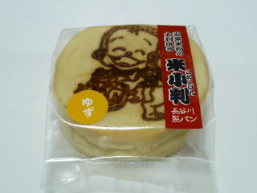
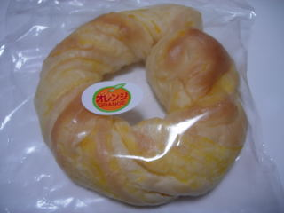

長谷川製パンの米小判（ゆず）
2010/11/29
安来米粉の大判焼きです。

米粉なのでもちもちっとしていて、お餅っぽいですね。中にはゆずあんが沢山入っていました。
ゆずあん味なので、和菓子っぽいなって思いながら食べました。
ちょっと大判焼きっぽくない、新しい味だなって思いました。
安来市広瀬町菅原1050-7
2010/11/29
安来米粉の大判焼きです。

米粉なのでもちもちっとしていて、お餅っぽいですね。中にはゆずあんが沢山入っていました。
ゆずあん味なので、和菓子っぽいなって思いながら食べました。
ちょっと大判焼きっぽくない、新しい味だなって思いました。
2010/06/06
出雲市にある「いしかわ高岡店」で販売していました。

オレンジがたっぷり練りこんであり、オレンジ味がしっかしりて、甘くて美味しかったです。
ここのお店にはパン屋「ベルク」も入っているので、どっちを選ぶか迷いますね。